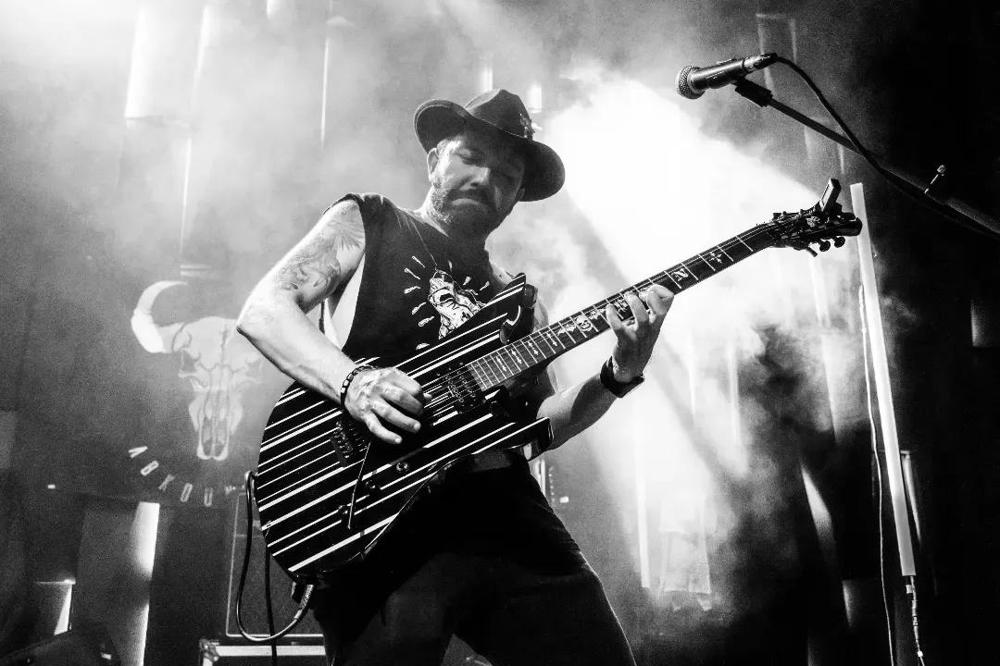

RAH
İlk albüm 26 Haziran’da Portal Co. etiketiyle çıktı. 1 Ağustos’ta Unite’ta lansman, sergi ve söyleşi. Ekimde “Bir Alt Katın Şeytanı” klibi yayında.

“Nasıl okunacağı belli olmayan, söylendiğinde nasıl yazılacağı belli olmayan.” FARKLI.
İLK ALBÜM · 26.06.2026 · PORTAL CO.
“Hep bir albümüm olsun istemiştim. Hakikatim, yolum, RAH sonunda sizlerle buluşuyor.”
8 şarkı · 34 dakika. Yılların emeği; ses, imge ve anlatının iç içe geçtiği, döngüsel bir yolculuk.
Spotify’a bu tarayıcıda giriş yapılmışsa şarkının tamamı, yapılmamışsa 30 saniyelik önizlemesi çalar.
ABKOUNTRY’NİN KENDİ SÖZLERİYLE
Arayışım yol oldu, kayboluşlarım arayış. Dostlarım bilir beni, samimiyetten bahsederim hep. Derin kuytularda ararım hakikati.
· Abkountry, RAH çıkış gecesi
KLİPLER · 2019 → 2026
Kaydır, seç, oynat.
RAKAMLAR · KASIM 2026
Reklamla değil, kulaktan kulağa büyüyen bir dinleyici kitlesi.
YOL
İlk albüm 26 Haziran’da Portal Co. etiketiyle çıktı. 1 Ağustos’ta Unite’ta lansman, sergi ve söyleşi. Ekimde “Bir Alt Katın Şeytanı” klibi yayında.
AGAB ile kaydedilen türler arası parça, Radyo Boğaziçi Müzik Ödülleri’nde “En İyi Düet” seçiliyor. Ottoman Vampires olarak Zorlu PSM’de MIXFEST sahnesi.
Uzun bir aradan sonra ilk solo tekli. Yönetmen Reha Kip, sanat yönetmeni Ekin Başak Akgül. Aynı yıl Zorlu PSM’de AGAB ile tarihi bir konser.
Sofar Sounds Ankara’da “Yoldayım”. Duygu yoğunluğu yüksek gitar riffleri, orb.one’ın ritimleriyle birleşiyor.
Fırat Ağacık ile Universal Music etiketinde dört parçalık seri. “Daha Kaç Çeşit Hoşçakal” milyonlarca dinlenmeye ulaşıyor.
“Abkountry” doğuyor. İnorganik Müzik’ten “Beni Bulun”, “Okült”; Yiğit Seferoğlu ve Fırat Ağacık ile Life is Peachy serisi.
YAN YOLLAR
SAHNE
DUVARDAKİ YAZILAR
Dinleyiciler yorumlara bunu yazdı. Geç kaldılar. Notları sürükle, karıştır.
KONSER · KAYIT · İŞBİRLİĞİ
Sahneye çağır.Konser, festival ve işbirliği talepleri için Instagram üzerinden yazın.